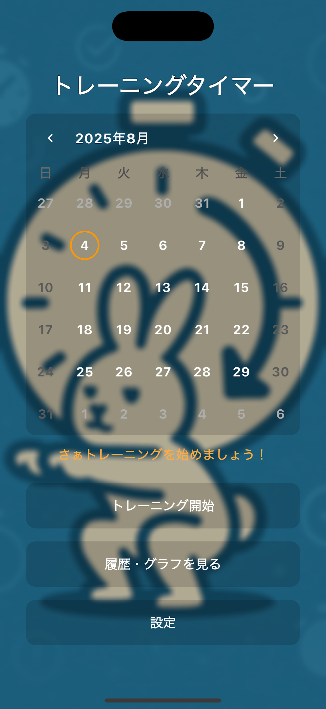

ラウンド時間を設定 Custom Round Duration
1ラウンドのトレーニング時間を設定できます。 競技やメニューに合わせて自分のペースで利用できます。 Set the duration of each training round according to your workout or sport.
ボクシング、MMA、キックボクシング、HIIT、縄跳び、プランクなど、 ラウンドやインターバルを繰り返すトレーニングに使える シンプルなタイマーアプリです。
A simple training timer for Boxing, MMA, Kickboxing, HIIT, Jump Rope, Plank and other round-based or interval workouts.

ラウンド制のトレーニングでは、 「何分動くか」「何秒休むか」「何ラウンド繰り返すか」を 毎回確認する必要があります。
Simple Training Timerは、 こうしたトレーニングの時間管理をできるだけシンプルにすることを 目的として開発したタイマーアプリです。 ラウンド時間、インターバル時間、ラウンド数を設定しておけば、 あとはタイマーを開始するだけでトレーニングを進められます。
複雑な機能を大量に追加するのではなく、 「トレーニング中に迷わず使えること」を重視した設計になっています。
Round-based workouts require you to keep track of how long you train, how long you rest, and how many rounds you complete.
Simple Training Timer was designed to make this time management easier. Set your round duration, interval duration and number of rounds, then start the timer and focus on your workout.
Instead of adding unnecessary complexity, the app focuses on making the timer easy to understand and use during training.
ラウンド制・インターバル制トレーニングに必要な機能を、 分かりやすくまとめています。 The app provides the essential functions needed for round-based and interval training.
1ラウンドのトレーニング時間を設定できます。 競技やメニューに合わせて自分のペースで利用できます。 Set the duration of each training round according to your workout or sport.
ラウンド間の休憩時間を設定できます。 トレーニングと休憩を繰り返すメニューに適しています。 Set the rest or interval duration between rounds for repeated workout cycles.
必要なラウンド数を設定して、 決めたメニューを最後まで進められます。 Choose the number of rounds required for your workout session.
よく利用するトレーニング設定を名前付きで保存できます。 例えば「3分×3R」のようなメニューを登録しておくと、 次回から簡単に利用できます。 Save frequently used workout settings as named presets and reuse them whenever needed.
トレーニング中でも必要な情報を確認しやすい、 余計な操作を減らしたシンプルなUIを目指しています。 The interface is designed to keep important timer information easy to understand during workouts.
日本語と英語に対応しています。 The app supports both Japanese and English.
基本的な使い方は、時間を設定してタイマーを開始するだけです。 Getting started is simple: configure the timer and start your workout.
ラウンド時間、インターバル時間、ラウンド数を トレーニング内容に合わせて設定します。 Set the round duration, interval duration and number of rounds.
タイマーを開始し、 画面の時間表示を確認しながらトレーニングを行います。 Start the timer and follow the workout intervals shown on the screen.
よく使う設定はプリセットとして保存しておくことで、 次回から素早くトレーニングを開始できます。 Save frequently used configurations as presets to start future workouts quickly.
一定時間の運動と休憩を繰り返すさまざまなトレーニングに利用できます。 The timer can be used for many workouts that alternate between exercise and rest periods.
例えば「3分トレーニング＋1分休憩」を3ラウンド、 といったボクシングのラウンド形式の練習に利用できます。 Useful for boxing workouts based on repeated rounds, such as 3-minute rounds with 1-minute rests.
MMAやキックボクシングなど、 一定時間の練習と休憩を繰り返すトレーニングにも利用できます。 Suitable for MMA and Kickboxing sessions that alternate between training and rest periods.
短時間の高強度運動と休憩を繰り返す HIITの時間管理にも利用できます。 Use the timer to structure repeated high-intensity exercise and rest periods.
縄跳びの練習時間と休憩時間を決めて、 一定のリズムでトレーニングしたい場合に利用できます。 Useful for structured jump rope sessions with fixed exercise and rest periods.
プランクや筋力トレーニングなど、 一定時間の運動と休憩を繰り返すメニューにも使えます。 Suitable for plank exercises, strength training and other timed workout routines.
自分で運動時間と休憩時間を決める オリジナルのインターバルトレーニングにも利用できます。 Create your own interval workout by choosing your preferred exercise and rest durations.
Simple Training Timerは、 ラウンド制トレーニングを行う人が、 時間管理に悩まずトレーニングへ集中できるようにすることを 目的としたiOSアプリです。
特に、ボクシングやMMAなどの格闘技だけでなく、 HIIT、縄跳び、プランク、サーキットトレーニングなど、 「運動する時間」と「休憩する時間」を繰り返す さまざまな運動で利用できることを重視しています。
トレーニング方法は人によって異なるため、 あらかじめ決められた1種類のメニューではなく、 ラウンド時間、休憩時間、ラウンド数を 自分で設定できるようにしています。
Simple Training Timer is an iOS app designed to help people focus on their workouts without having to manually manage workout and rest times.
It is suitable not only for combat sports such as Boxing and MMA, but also for HIIT, Jump Rope, Plank, circuit training and other interval-based workouts.
Since workout routines differ from person to person, the app allows users to configure their own round duration, rest duration and number of rounds.
Simple Training Timerの機能や利用方法について、 よくある質問をまとめています。 Here are answers to common questions about Simple Training Timer and how it works.
Simple Training Timerは、 ボクシング、MMA、キックボクシング、HIIT、縄跳び、プランクなど、 ラウンド制・インターバル制のトレーニングに利用できる iPhone向けタイマーアプリです。
はい。 トレーニングのラウンド時間、 インターバル・休憩時間、 ラウンド数を設定できます。
はい。 よく利用する設定をプリセットとして保存し、 異なるトレーニングメニューを簡単に再利用できます。
ボクシング、MMA、キックボクシング、HIIT、 縄跳び、プランク、サーキットトレーニングなど、 運動と休憩を繰り返すトレーニングに利用できます。
はい。 Simple Training Timerは無料のiOSアプリとして提供しています。
Simple Training Timer is an iPhone training timer designed for round-based and interval workouts such as Boxing, MMA, Kickboxing, HIIT, Jump Rope and Plank.
Yes. You can customize the training round duration, interval or rest duration, and the number of rounds.
Yes. Frequently used settings can be saved as presets so you can quickly reuse different workout configurations.
The timer can be used for Boxing, MMA, Kickboxing, HIIT, Jump Rope, Plank, circuit training and other interval-based workouts.
Yes. Simple Training Timer is available as a free iOS application.
ご注意： Simple Training Timerは トレーニングの時間管理をサポートするためのタイマーアプリです。 実際の運動はご自身の体調や運動経験に合わせて、 安全に行ってください。
Note: Simple Training Timer is a timer application designed to help manage workout intervals. Please exercise safely according to your physical condition and experience.